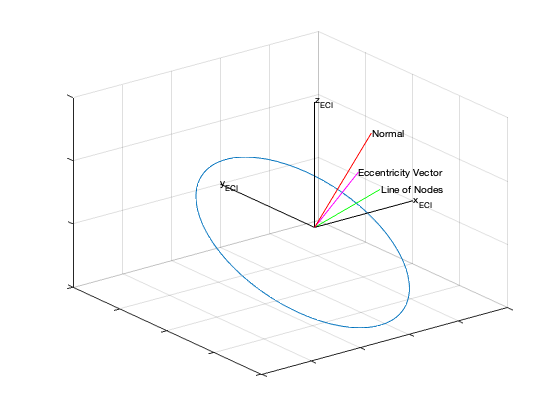

Contents
Draw orbital elements
See also El2RV, NewFigure, Unit
m = linspace(0,2*pi); n = length(m); el = [repmat([9000;0.5;0.3;0.2;0.3],1,n);m]; [r,v] = El2RV(el); NewFigure('Elliptic Orbit') plot3(r(1,:),r(2,:),r(3,:)); grid on % Scale factor for lines on plots l = 10000; % Axes line([0 l],[0 0],[0 0],'color','k') line([0 0],[0 l],[0 0],'color','k') line([0 0],[0 0],[0 l],'color','k') text(l,0,0,'x_{ECI}','interpreter','tex') text(0,l,0,'y_{ECI}','interpreter','tex') text(0,0,l,'z_{ECI}','interpreter','tex') % Normal h = l*Unit(cross(r(:,1),v(:,1))); line([0 h(1)],[0 h(2)], [0 h(3)],'color','r'); text(h(1),h(2),h(3),'Normal','interpreter','tex') % Line of Nodes n = l*Unit(cross([0;0;1],h)); line([0 n(1)],[0 n(2)], [0 n(3)],'color','g'); text(n(1),n(2),n(3),'Line of Nodes','interpreter','tex') % Eccentricity vector r = r(:,1); v = v(:,1); rV = r'*v; vSq = v'*v; rMag = sqrt(r'*r); mu = 3.98600436e5; % Earth e = l*Unit(((vSq - mu/rMag)*r - rV*v)/mu); line([0 e(1)],[0 e(2)], [0 e(3)],'color','m'); text(e(1),e(2),e(3),'Eccentricity Vector','interpreter','tex') set(gca,'xticklabel',{},'yticklabel',{},'zticklabel',{})
ans =
Figure (1: Elliptic Orbit) with properties:
Number: 1
Name: 'Elliptic Orbit'
Color: [0.94 0.94 0.94]
Position: [560 528 560 420]
Units: 'pixels'
Use GET to show all properties
 Copyright
Copyright (c) 2019 Princeton Satellite Systems, Inc. All rights reserved.